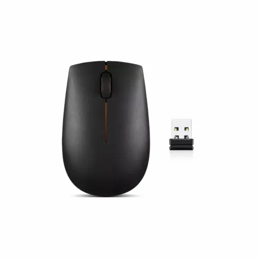
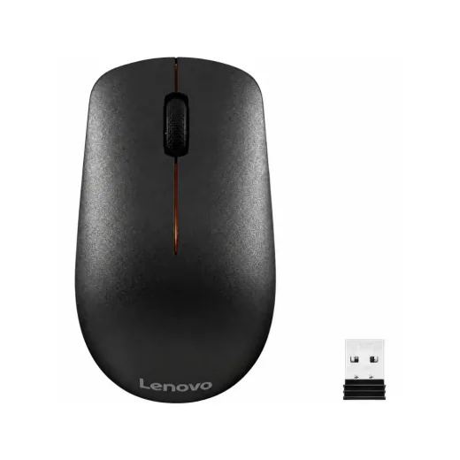
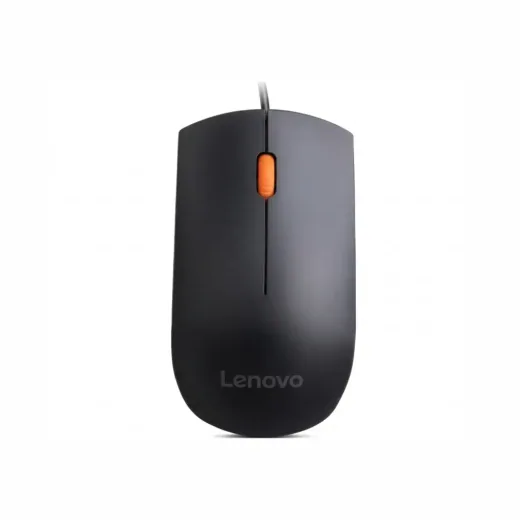
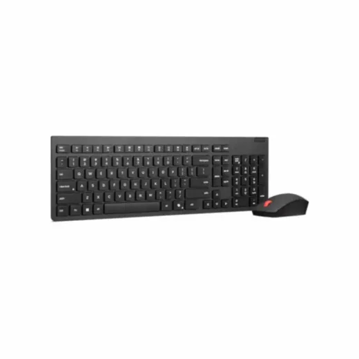
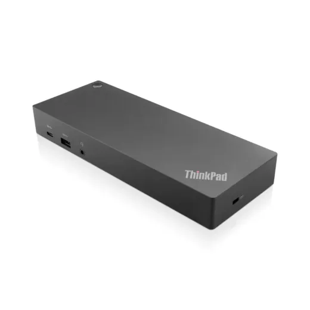

Inicio › Mouse, teclados y webcams

Lenovo · Modelo GX30K79402
Mouse Inalambrico Lenovo 300 GX30K79402
L 480
En Sycom
Precio en cada tienda
| Tienda | Precio | Antes | Disponibilidad | |
|---|---|---|---|---|
| Sycom | L 480 | — | Disponible | Ver en tienda › |
Precios referenciales tomados de cada tienda el 14 de noviembre de 2026. El precio válido es el que muestra la tienda al comprar.
Otros mouse, teclados y webcams Lenovo

Mouse Inalambrico Lenovo 400 GY50R91293L 550En Sycom
Mouse USB Lenovo 300 GX30M39704L 295En Sycom
Kit de Teclado y Mouse Inalambrico Lenovo Essential 4X31R64453L 1,350En Sycom
Docking Station Lenovo ThinkPad USB Tipo C 40AF0135US · 40AF0135CN · SD20Q13457L 8,000En Sycom